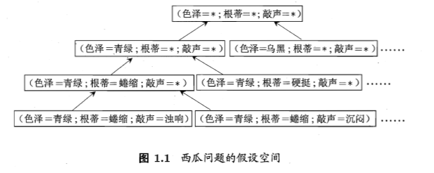
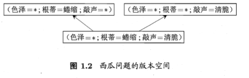
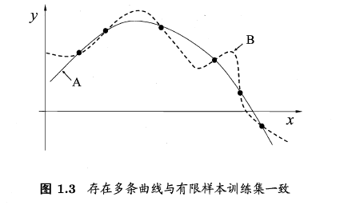
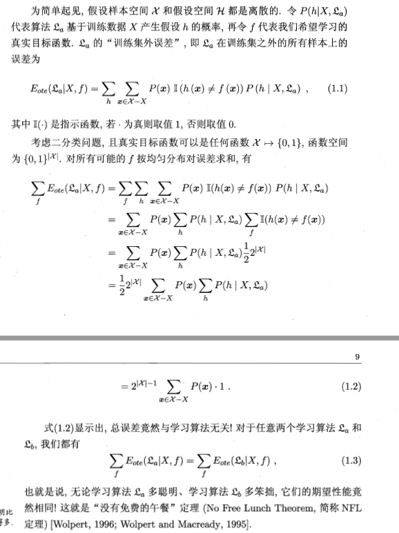
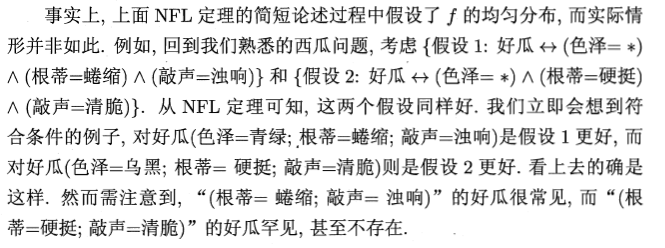

机器学习<一>：绪言
文章目录
机器学习现在已经发展成为了一个相当大的学科领域，读者想要更好的学习机器学习仅仅学习本书是远远不够的！第一章节大概介绍了一些基本概念和机器学习的大致发展过程，比起网上的很多Mooc确实强上不少，深入浅出，娓娓道来，让人印象深刻的同时反思机器学习的发展状况到底是否还适合19年的我去学习。
傍晚小街路面上沁出微雨后的湿润，和煦的细风吹来，抬头看着天边的晚霞，嗯，明天又是一个好天气。走到水果摊旁，挑了个根底蜷缩、敲起来声音浑浊的青绿西瓜，一边满心期待着皮薄肉厚瓤甜的爽落感，一边愉快地想着，这学期狠下功夫，基本概念弄得清清楚楚明明白白，算法作业也是信手捏来，这门课成绩一定查不了！
一、绪言
机器学习致力于研究如何通过计算的手段，利用经验和改善系统自身的性能。在计算机系统中，“经验”通常以“数据”形式存在，因此，机器学习所研究的主要内容，是关于在计算机上从数据中产生“模型”的算法，即“学习算法”（learning algorithm）。有了学习算法，我们把经验数据提供给它，它就能基于这些数据产生模型；在面对新的情况时，模型会给我们提供相应的判断。
如果说计算机科学是研究关于算法的学问，那么类似的，可以说机器学习是研究关于学习算法的学问。更形式化的定义：假设用P来评估计算机程序在某任务类T上的性能，若一个程序通过利用经验E在T中任务上获得了性能改善，则我们就说关于T和P，该程序对E进行了学习。
本书用“模型”泛指从数据中学到的结果，有文献用“模型”指全局性结果（例如一颗决策树），而用“模式”指局部性结果（例如一条规则）。
1.1 基本术语
- data set：数据集
- sample：样本
- feature：特征
- attritube space：属性空间
- feature vector：特征向量
- dimensionality：维数
- classification:分类
- regression:回归
- training data:训练集
- hypothesis:真实 潜在规则自身
- lable：标记
- testing sample：测试样本
- clustering：聚类
- cluster：簇
- supervised learning：监督学习
- unsupervised learning：无监督学习
- generalization：泛化
- distribution：分布
- independent and identically distributed：独立同分布
- induction：归纳
- deduction：演绎
- concept：概率
- inductive learning：归纳学习
- specialization：特化
要进行机器学习，先要有数据，假定我们收集了一批关于西瓜的数据，例如：(色泽=青绿；根蒂=硬挺；敲声=清脆)，(色泽=乌黑；根蒂=稍蜷；敲声=沉闷)，(色泽=浅白；根蒂=硬挺；敲声=清脆)，····,每对括号内是一条记录，“=”意思是“取值为”。
这组记录的集合称为一个 “数据集”（data set），其中每条记录是关于一个时间或一个对象（这里是一个西瓜）的描述，称为一个示例（instance）或样本（sample）。反映事件或对象在某方面的表现或性质的事项，例如“色泽”、“根蒂”、“敲声”，称为属性（attribute）或“特征”（feature）；属性上的取值，例如 青绿、乌黑称为属性值（attribute value）。属性张成的空间称为属性空间（attribute space）\样本空间（sample space）或输入空间。例如我们把色泽、根蒂、敲声作为三个坐标轴，则它们张成一个用于描述西瓜的三维空间，每个西瓜都可在这个空间中找到自己的坐标位置，由于空间中的每个点对应一个坐标向量，因此我们也把一个示例称为一个特征向量（feature vector).
一般地，令 $D={x_1,x_2,x_3,···,x_m}$ 表示包含m个示例的数据集，每个示例由d个属性描述（例如上面的西瓜数据使用了3个属性），则每个示例由 d 个属性描述（例如上面的西瓜数据使用了3个属性），则每个示例 $ x_i = (x_i1;x_i2;···;x_id)$ 是d维样本空间 X 中的一个向量，$x_i \in X$,其中 $X_ij $ 是 $x_i$ 在第 j 个属性上的取值，d称为样本 $x_i$的 维数 （dimensionality）。
1.2 分类、回归、聚类
如果希望学得一个能帮助我们判断没刨开的是不是好瓜的模型，仅有前面的示例数据显然是不够的，要建立这样的关于 Prediction（预测）的模型，我们需获得训练样本的结果信息，例如：“（（色泽=青绿，根蒂=蜷缩，敲声=浑浊），好瓜）”。这里关于示例结果的信息，例如，好瓜，称为 Lable(标记)，拥有了标记信息的示例，称为样例（example），一般的，用$（X_i,y_i）$ 表示第 i 个样例，其中$y_i \in Y $ 是示例 $ x_i$ 的标记， Y是所有标记的集合，亦称为 Label space (标记空间) 或 输出空间。
- 分类 classification ：若我们欲预测的是离散值，例如“好瓜”、“坏瓜”。一般地，预测任务是希望通过对训练集 ${(x_1,y_1),(x_2,y_2),···,(x_m,y_m)}$ 进行学习，建立一个从输入空间 X到输出空间 Y 的映射 $f:X \to Y$
- 对只涉及两个类别的“二分类” binary classification 任务，通常称其中一个类为 “正类” positive class,另一个类为“反类” negative class。对二分类任务，通常令 $ Y={-1,+1} 或 {0,1}$。
- 对涉及多个类别时，则称为“多分类” multi-class classification 任务。对多分类任务，$ \vert Y \vert > 2$;对回归任务，$ y= R,R为实数集$。
- 回归 regression : 若我们预测是连续值，例如西瓜成熟度0.95、0.37。
学得模型后，使用其进行预测的过程称为“测试”（testing），被预测的样本称为“测试样本”（testing sample）。例如在学得 $f$ 后，对测试例 $x$，可得到其预测标记 $y= f(x)$。
- 聚类 clustering ：将训练集中的西瓜分为若干组，每组称为一个 簇（cluster），这些自动形成的簇可能对应一些潜在的概念划分，例如 浅色瓜、深色瓜，甚至本地瓜、外地瓜，这样子的学习过程有助于我们了解数据内在的规律，能为更深入地分析数据建立基础，需说明的是，在聚类学习中，浅色瓜、本地瓜这样的概念我们事先是不知道的，而且学习过程中使用的训练样本通常不拥有标记信息。
1.3 监督学习和无监督学习
根据训练数据是否拥有标记信息，学习任务可大致划分为两大类：监督学习（supervised learning）和无监督学习(unsupervised learning)，分类和回归是前者的代表，而聚类则是后者的代表。
需要注意的是，机器学习的目标是使学得的模型能很好地适用于新样本，而不是仅仅在训练样本上工作得很好；即便对聚类这样子的无监督学习任务，我们也希望学得的簇划分适用于没在训练集中出现的样本，学得模型适用于新样本的能力，称为 泛化 （gengralization）能力。尽管训练集通常只是样本空间的一个很小的采样，我们仍希望它嫩很好反映出样本空间的特性，否则就很难期望在训练集上学得的模型能在整个样本空间上都工作得很好。
通常假设样本空间中全体样本服从一个未知分布 （distribution）$ D $，我们获得的每个样本都是独立地从这个分布上采样获得，即 独立同分布（independent and identically distributed 简称 i.i.d），一般而言，训练样本越多，我们得到的关于 $D$的信息越多，这样就越有可能通过学习获得具有强泛化能力的模型。
1.4 假设空间和版本空间
归纳（induction）和演绎（deduction）是科学推理的两大基本手段，前者是从特殊到一般的泛化（generalization)过程，即从具体的事实归结出一般性规律，后者则是从一般到特殊的特化（specialization)过程，即从基础原理推演出具体状况。例如在数学公里系统中，基于一组公理和推理规则推导出与之相洽的定理，这是演绎；而从样例中学习，显然是一个归纳的过程，因此亦称为归纳学习（inductive learning）。
归纳学习：
- 狭义：要求从训练数据中学得概率（concept)，因此亦被称为概念学习或概念形成。因为技术实现较难，现在的大多数技术是产生黑箱模型，有所了解有助于理解机器学习的一些基础思想。
- 广义：相当于从样例中学习
西瓜问题的假设空间：可以有许多策略对这个假设空间进行搜索，例如自顶向下、从一般到特殊，或是自底向上、从特殊到一般，搜索过程中可以不断删除与正例不一致的假设、和（或）反例一致的假设，最终将会获得与训练集一致（即对所有训练样本能给进行正确判断）的假设，这就是我们学得的结果。

西瓜问题的版本空间：需要注意的是，现实问题中我们常面临很大的假设空间，学习过程是基于有限样本训练集进行的，因此，可能有多个假设与训练集一致，即存在着一个与训练集一致的假设集合，称之为 版本空间。

1.5 归纳偏好
如果有一个训练样本满足上述三个假设，那么哪一个假设更好呢？对于一个具体的学习算法来说，必须产生一个模型。这时，学习算法本身的偏好就会起到关键的作用。若我们的算法喜欢_尽可能特殊_ 的模型：好瓜-（色泽=*）^(根蒂=蜷缩)^(敲声=浑浊),若我们的算法喜欢 _尽可能一般_ 的模型：好瓜-（色泽=*）^(根蒂=蜷缩)^(敲声=*)，机器学习算法在学习过程中对某种类型假设的偏好，称为 归纳偏好 。
任何一个有效的机器学习算法必有其归纳偏好，否则它被假设空间中看似在训练集上等效的假设所迷惑，而无法产生确定的学习结果。
归纳偏好的作用在图1.3这个回归学习图中可能更直观，这里的每个训练样本是图中的一个点（x,y），要学得一个与训练集一直的模型，相当于找到一条穿过所有训练样本点的曲线，显然，对有限个样本点组成的训练集，存在着很多条曲线与其一致，我们的算法必须有某种偏好，才能产出它认为正确的模型。例如若认为相似的样本应有相似的输出（例如在各种属性上都很相像的西瓜，成熟程度应该比较接近），则对应的学习算法可能偏好图1.3中比较平滑的曲线A而不是比较崎岖的曲线B。

A 如何引导算法确立正确的偏好
Occam`s razor 是一种常用的、自然科学研究中最基本的原则，即 若有多个假设与观察一致，则选最简单的那个，如果采用这个原则，并且假设我们认为更平滑意味着更简单，则在图中我们会自然地偏好平滑的曲线A.
事实上，归纳偏好对应了学习算法本身所做出的关于 什么样的模型更好 假设，在具体的现实问题中，这个假设是否成立，集算法的归纳偏好是否与问题本身匹配，大多数时候直接决定了算法能否取得好性能。
但是如果我们采取的是 描述简单性来选择算法的话，会出现一种情况。会不会在某种情况下，B比A的泛化能力更强？这是完全有可能的，而且根据公式推导我们会得到一个结论：NFT，No Free Lunch Theorem 没有免费午餐定理，在任何一个算法中，对于任意两个学习算法不管是A还是B他们的总误差与学习算法是无关的。

B 注意NFT定理的前提
NFL定理有一个重要前提：所有问题出现的机会相同、或所有问题同等重要，但实际情况并不是这样。很多时候，我们只关注自己正在试图解决的问题（例如某个具体应用任务），希望为它找到一个解决方案，至于这个解决方案在别的问题、甚至相似的问题上是否为好方案，我们并不关心。

所以 NFT定理最主要的寓意就是让我们清楚的认识到，脱离具体问题，空泛地谈论 什么学习算法更好 毫无意义，因为考虑所有潜在的问题，则所有学习算法都一样好，要谈论算法的相对优劣，必须要针对具体的学习问题；在某些问题上表现好的学习算法，在另一些问题上却可能不尽人意，学习算法自身的归纳偏好于问题是否相配，往往会起到绝对性的作用
1.6 发展历程
机器学习是人工智能（artificial intelligence）研究发展到一定阶段的必然产物。
- 二十世纪五十年代到七十年代初：人工智能研究处于推理期
- 二十世纪七十年代：LLP
- 二十世纪八十年代：样例学习
a. 决策树:典型的决策树学习以信息论为基础，以信息熵的最小化为目标，直接模拟了人类对概念进行判定的树形流程。
b. 基于逻辑的学习 - 二十世纪九十年代：
a. 神经网络的连接主义学习：BP算法作为被应用最广泛的机器学习算法一直，它的推广使得在很多现实问题上发挥作用。连接主义学习的最大局限是其 试错性，简单地说，其学习过程涉及大量参数，而参数的设置缺乏理论指导，主要靠手工调参；夸张一点说，参数调节上失之毫厘，学习结果可能谬之千里。
b. 统计学习（statistical learning)闪亮登场并迅速占据主流舞台，代表性技术是支持向量机（Support vector machine，SVM）,以及更一般的核方法（kernel methods）。 - 二十一世纪初：
a. 连接主义学习以深度学习名义卷土重来：深度学习狭义上讲就是很多层的神经网络，在若干测试和竞赛中，尤其涉及语音、图像等复杂对象的应用中，深度学习技巧取得了优越性能。以往机器学习技术在应用中要取得好性能，对使用者的要求较高；而深度学习技术涉及的模型复杂度非常高，以至于只要下功夫调参，把参数调节好，性能往往就好。深度学习虽然缺乏严格的理论基础，但它显著降低了机器学习应用者的门槛，为机器学习技术走向工程实践带来了便利深度学习的缺点：数据大了、计算能力强了。深度学习模型拥有大量参数，若数据样本少，则很容易过拟合；如此复杂的模型、如此大的数据样本，若缺乏强力计算设备，根本无法求解。随着大数据时代的到来，数据存储与计算设备都有了大发展，才使得连接主义学习技术焕发又一春。深度学习此时的状况，与彼时的神经网络何其相似。
1.7 应用现状
过去二十年中，人类收集、存储、传输、处理数据的能力取得飞速提升，人类社会的各个角落都积累了大量数据，亟需能有效对数据进行分析利用的计算机算法，而机器学习恰顺应了大时代的这个迫切需求，因此该学科领域很自然取得巨大发展、受到广泛关注。
但是为什么到了19年之后唱衰机器学习的人在知乎上越来越多，但是留学生学习的内容却在各个方面都需要使用机器学习来实现呢？ 这是一个值得我去思考的问题，如果机器学习真的不是一个蓝海，而是即将成为红海，那么下一个风口又是什么？
A 机器学习的应用领域：
- 多媒体
- 图形学
- 网络通信、软件工程乃至体系结构、芯片设计
- 计算机视觉、自然语言处理
- 交叉学科：生物信息学
B 机器学习与数据挖掘的关系
数据挖掘在二十世纪九十年代形成，受到很多学科领域（比如数据框、机器学习、统计学）的影响。（读者注：R语言诞生于1995开源的S语言），数据挖掘是从海量数据中发掘知识，这就必然涉及对海量数据的管理和分析。大体来说，数据框领域的研究为数据挖掘提供数据管理技术，而机器学习和统计学的研究为数据挖掘提供数据分析技术。由于统计学界的研究成果通常需要经由机器学习研究来形成有效的学习算法，之后再进入数据挖掘领域，从整个意义上来说，统计学主要是通过机器学习对数据挖掘发挥影响，而机器学习领域和数据库领域则是数据挖掘的两大支撑。
2004年3月美国DARPA就组织了自动驾驶车比赛。2011年6月，美国内达华州通过法案认可自动驾驶车。
C 机器学习的不为人知的优点
机器学习备受瞩目当然是由于它已成为智能数据分析技术的创新源泉，但机器学习研究还有另一个不可忽略的意义，即通过建立一些关于学习的计算模型来促进我们理解 人类如何学习。从这个意义上说，机器学习不仅在信息科学中占有重要地位，还具有一定的自然科学探索色彩。
1.8 推荐读物和课后习题
1.1 表1.1 中若只包含编号1 和 4 的两个样例，试给出相应的版本空间